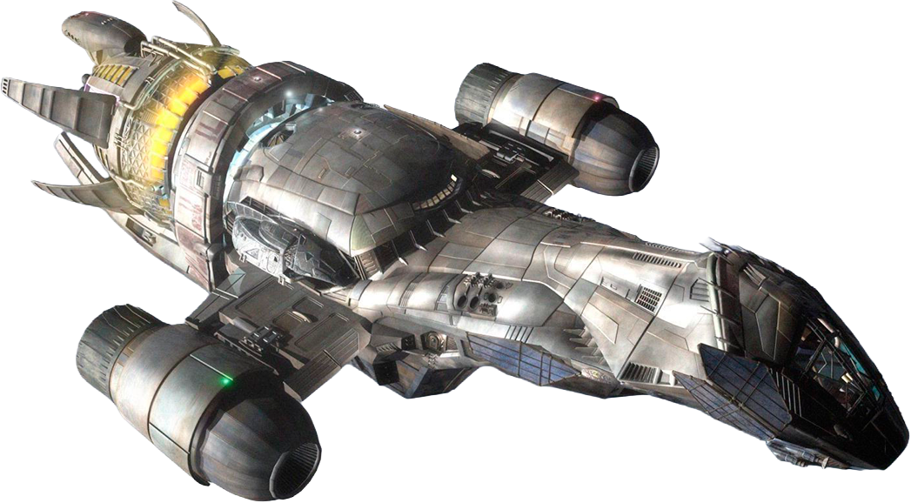

Bienvenido a bordo de Serenity

Firefly es una serie de ciencia ficción y western espacial creada por Joss Whedon, emitida en 2002-2003. Sigue a la tripulación de la nave Serenity mientras sobrevive en los confines del sistema solar.
¿Por qué verla?
- Personajes inolvidables y diálogos memorables
- Mezcla única de western y ciencia ficción
- Una comunidad de fans apasionada